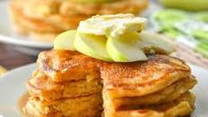

Apple Pancakes

Description
Delicious Apple Pancakes for breakfast
Ingredients
- 1 ¼ cups all-purpose flour
- 1 tablespoon white sugar or to taste
- 1 ¼ teaspoons baking powder
- ¼ teaspoon ground cinnamon or to taste
- 1 cup milk or as needed
- ¼ cup butter, melted
- 1 large egg
- 1 cup shredded tart apple
- Gather all ingredients.
- Sift flour, sugar, baking powder, and cinnamon together in a large bowl.
- Make a well in the center and add milk, melted butter, and egg; mix until smooth. Stir grated apple into pancake batter until just combined.
- Heat a lightly oiled griddle or frying pan over medium-high heat. Pour or scoop the batter onto the griddle, using approximately 1/4 cup for each pancake; cook until bubbles form and the edges are dry, about 2 to 3 minutes.
- Flip and cook until browned on the other side. Repeat with remaining pancake batter.
- Serve and enjoy!
Home